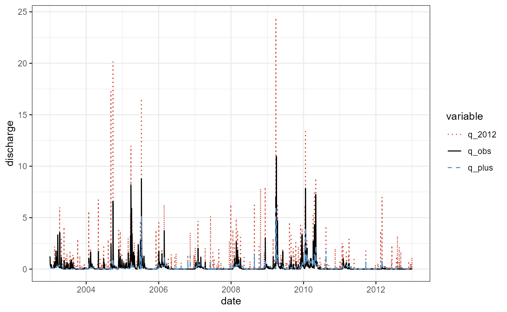
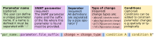
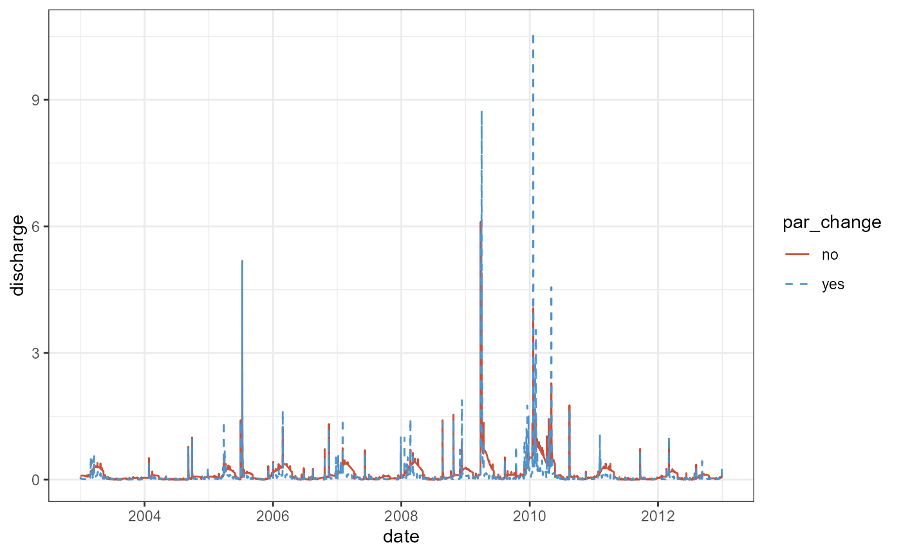
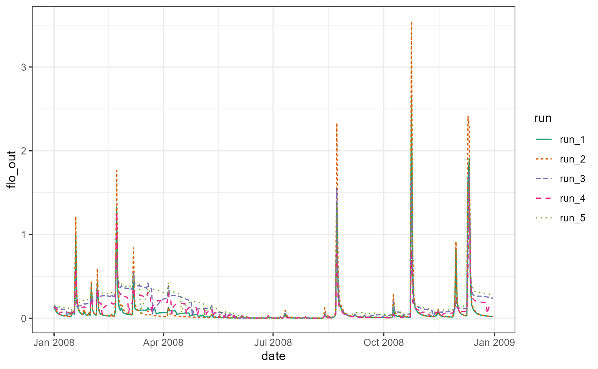

Note: The SWATrunR GitHub is currently
not up to date with the current SWATrunR version > 0.9.0
due to significant changes in the output definition and the
returning/saving of simulation outputs. Some parts of the website
content are still useful. The website will be updated in the following
days.
Loading SWATrunR
If you did not install SWATrunR yet you can do that now
running the following lines in R.
# If the package remotes is not installed run first:
install.packages('remotes')
remotes::install_github('chrisschuerz/SWATrunR')Before we start exploring the package load SWATrunR.
SWAT demo projects
SWATdata provides a set of fast running, lightweight
SWAT2012 and SWAT+ model setups of a head watershed of the Little River
Experimental Watershed [LREW; Bosch et al. (2007)]. Additionally, discharge
observations at the outlet of the demo catchment (gauge J of LREW) and
spatial information of the SWAT model setups are available from
SWATdata. The SWATdata
GitHub page gives an overview of the available data sets.
Loading a SWAT project
Demo data can be loaded with the function load_demo().
With the input argument dataset you can define which SWAT
project data you want to load. To load a SWAT project folder define
dataset = 'project'. The path defines the path
on your local hard drive where you want to store the SWAT project
folder. Please try to avoid blanks in your path
names (e.g. ‘C:/this is a/path with blanks’).
This can cause issues when running the model. Try to use
e.g. ’_’ in your path names
instead. As the SWAT project is available as SWAT+ and as
SWAT2012 project you have to specify the version of the
SWAT project you want to load. Use version = 'plus' to load
a SWAT+ project and version = '2012' to load a SWAT2012
version of the project. SWAT+ is under constant development and new
model revisions are released from time to time. I try to keep
SWATdata and the SWAT+ demo projects up to date and provide
at least a few of the last SWAT+ revisions as demo projects. If no
revision number is specified the most recent SWAT+ model is
loaded. You can, however, also load a SWAT+ project with that was built
for a specific SWAT+ revision by providing for example the input
argument revision = 59.3 to load a SWAT+ revision 59.3
model setup. Please check the SWATdata
GitHub page to see which model setups are available. The two examples
below load the most recent SWAT+ model setup and the available SWAT2012
setup.
# The path where the SWAT demo project will be written
demo_path <- 'Define:/your/path'
# Loading a SWAT+ demo project
path_plus <- load_demo(dataset = 'project',
path = demo_path,
version = 'plus')
# Loading a SWAT2012 demo project
path_2012 <- load_demo(dataset = 'project',
path = demo_path,
version = '2012')In the case of a SWAT project load_demo() saves the
defined SWAT project in the file path that was defined with
path = demo_path and returns the final demo project path as
a character string in R. I assigned these paths to the
variables path_plus and path_2012 to use them
later in the model runs.
Observation data
SWATdata also provides daily discharge records for the
outlet of the demo catchment (Gauge J of LREW) for the time period
1968-01-01 until 2012-12-31. Observation data are useful for the model
evaluation. These date will be used in several examples with the SWAT
demo projects. You can load the observation data again using the
function load_demo(). To access the observation data set
you have to define dataset = 'observation'. The other input
arguments are not required in this case as the observation data are the
same for all demos. When loading the observation data set
load_demo() returns a data frame with a date column and a
column for the mean daily discharge at that date. In the code below the
observation data frame is assigned to the variable
q_obs.
q_obs <- load_demo(dataset = 'observation')
q_obs#> # A tibble: 16,437 × 2
#> date discharge
#> <date> <dbl>
#> 1 1968-01-01 0.16
#> 2 1968-01-02 0.57
#> 3 1968-01-03 0.61
#> 4 1968-01-04 0.37
#> 5 1968-01-05 0.25
#> 6 1968-01-06 0.2
#> 7 1968-01-07 0.21
#> 8 1968-01-08 0.22
#> 9 1968-01-09 0.18
#> 10 1968-01-10 0.34
#> # … with 16,427 more rowsA quick plot of the observation data q_obs shows the
daily mean discharge at Gauge J for the years 1968 to 2012 in \(m^3 s^{-1}\).
plot(q_obs, type = 'l')First SWAT model runs
With the functions run_swatplus() and
run_swat2012() you can perform simulations in a SWAT+ or a
SWAT2012 project folder that is located on the local hard drive. SWAT
model simulations write a large range of output variables after a
simulation run. Usually only a few variables are analyzed
(e.g. in-stream discharge or nutrient loads). With the function
define_output() you can specify the output variables that
are returned to R after the simulation run. Thus, the
minimum information you have to provide to perform a model simulation is
where your project is located with the input argument
project_path and which simulation outputs should be
returned after the simulation defined with the input argument
output. The output variables are always specified with the
function define_output() and passed through with the input
argument output. The example below shows a minimum example
for a SWAT+ project.
project_path
As the project path we define the path to the previously loaded demo
project project_path = path_plus. If you do not want to
work with the demo project, but you already want to use your own SWAT
project you can define the path to your SWAT ‘TxtInOut’ folder and
simply run simulations there. Be aware in this case that the runtime can
be much longer for large projects, which might hinder you in testing
many things when first playing around with SWATrunR. The
demo projects are designed in a way that simulations should not take
longer than a few seconds, depending on the machine where it is
executed. If you want to use your own SWAT project please consider a few
things:
- The SWAT project folder must contain exactly one executable file.
run_swat*()automatically searches for the one SWAT executable in the project folder. If there are no or more than one executables available in the project folder an error is returned asrun_swat*()does not know which executable file to use. - Weather data must be provided with the project as
run_swat*()does some checks for which time periods weather data are available. - Make clear to use the right function, ether
run_swatplus()to run a SWAT+ project, orrun_swat2012()to run a SWAT2012 project. - again Please try to avoid blanks in your path names (e.g. ‘C:/this is a/path with blanks’). This can cause issues when running the model. Try to use e.g. ’_’ in your path names instead.
output and define_output()
The simple example below defines only one output that is returned to
R. The definition follows a simple syntax.
define_output() requires three input arguments. The
file indicates in which file the SWAT output variable of
interest is written. As we want to return the discharge in this example
we define file = 'channel_sd'. All output files for SWAT+
are listed in the ‘print.prt’ of your SWAT+ project. The
variable for the discharge that leaves a channel is called
'flo_out'. We define variable = 'flo_out'. The
third input argument is unit. unit defines for
which units, in this case for which channels, we want to extract the
output variable. The SWAT+ demo project has only one
channel and therefore we define unit = 1. The correct
channel ID is listed in the ‘chandeg.con’ file in the SWAT+
project folder. If you have, many channels and you want to compare your
simulation outputs with observation data, make sure to select the
correct id that corresponds to your gauge location.
q_sim_plus <- run_swatplus(project_path = path_plus,
output = define_output(file = 'channel_sd_day',
variable = 'flo_out',
unit = 1))
#> Building 1 thread in 'Define:/your/path/swatplus_demo/.model_run':
#> Thread 1 of 1 Time elapsed: 0S Time remaining: 0S
#> Completed 1 thread in 0S
#> Performing 1 simulation on 1 core:
#> Simulation 1 of 1 Time elapsed: 3S Time remaining: 0S
#> Completed 1 simulation in 3SThe syntax of define_output() that was shown above for
SWAT+ is the same for SWAT2012 projects. The only difference between the
two models in the output definition is how to correctly address the
output variables. The output files are organized differently in SWAT+
and SWAT2012. SWAT2012 simulations generate output files that are called
‘output.’ followed by a suffix that defines the type of output.
Subbasin outputs are stored in the ‘.sub’ file, HRU outputs in
the ‘.hru’ file, and channel outputs for example in the
’.rch’ file. This list is not comprehensive and there are
further output files. If you want to return variables from other
SWAT2012 output files please please go through the ‘output.’
files in your project folder after performing a simulation run. In the
minimum example we define file = 'rch' to access the
channel output file. The variable ‘FLOW_OUT’ defines the
discharge that leaves a channel. Therefore, we define
variable = 'FLOW_OUT'. Caution:
Be aware that the variable definition is case sensitive and
variables in SWAT2012 are usually upper case. The SWAT2012 demo
project has in total 3 channels. In the output definition we can also
define multiple units for which we want to extract outputs. In the
example below we define unit = 1:3 which means that we
return the ‘FLOW_OUT’ for the channel units 1,2, and 3.
q_sim_2012 <- run_swat2012(project_path = path_2012,
output = define_output(file = 'rch',
variable = 'FLOW_OUT',
unit = 1:3))
#> Building 1 thread in 'Define:/your/path/swat2012_demo/.model_run':
#> Thread 1 of 1 Time elapsed: 3S Time remaining: 0S
#> Completed 1 thread in 3S
#> Performing 1 simulation on 1 core:
#> Simulation 1 of 1 Time elapsed: 4S Time remaining: 0S
#> Completed 1 simulation in 4SAll caps variable names can be annoying when you frequently call them
in your analyses in R. You can also assign a different name
to the ouput variables. The only difference is that you have to provide
the defined outputs in a list(). The output definition in a
list() is required in any case when you want to define
several output variables, which is further explained in the article on
output definition. The small example below performs exactly the same
SWAT2012 simulations as above but assigns the names q_1,
q_2, and q_3 to the output variables.
q_sim_2012_2 <- run_swat2012(project_path = path_2012,
output = list(q = define_output(file = 'rch',
variable = 'FLOW_OUT',
unit = 1:3)))
#> Building 1 thread in 'Define:/your/path/swat2012_demo/.model_run':
#> Thread 1 of 1 Time elapsed: 3S Time remaining: 0S
#> Completed 1 thread in 3S
#> Performing 1 simulation on 1 core:
#> Simulation 1 of 1 Time elapsed: 4S Time remaining: 0S
#> Completed 1 simulation in 4SThe two examples for our first SWAT simulations use very basic output
definitions. The output definition in
run_swat*() can be more complex and more comprehensive. A
more detailed insight with further examples is provided in an article
that focuses on simulation output definition. I recommend to go the
examples in this article as well, as your model simulations should very
likely return more than just the discharge at your catchment outlet
(The article is currently in preparation and will be online soon.
Please be patient in the meantime).
Exploring the simulation outputs
SWATrunR aims to return SWAT simulations in a
tidy format. The date structure of the simulation results is
different for single simulation and many simulations with different
parameter sets. Yet, the general structure is the same for all
simulation outputs returned in R. Simulation results are
always arranged in tibbles (Müller and Wickham, 2019). In the
run_swat*() default setting (add_date = TRUE)
the first column of the simulation results is always the date column
followed by the columns for the output variables. If a single simulation
run was performed without parameter changes
(parameter = NULL so the default setting) a single tibble
with the simulation outputs for that run is returned. When performing
simulations with one or many different parameter sets a list of tibbles
is returned that I explain below.
If we have a look at the outputs of all three simulations we see that
they all have the same general structure. The first column is a date
column which is followed by the defined output variables. In the case of
the SWAT+ simulation outputs q_sim_plus the single output
variable that we defined is called flo_out, so the name of
the variable as it is defined in the .txt output file.
q_sim_plus
#> $simulation
#> $simulation$flo_out
#> # A tibble: 3,653 × 2
#> date run_1
#> <date> <dbl>
#> 1 2003-01-01 0.0924
#> 2 2003-01-02 0.0905
#> 3 2003-01-03 0.0912
#> 4 2003-01-04 0.0908
#> 5 2003-01-05 0.0918
#> 6 2003-01-06 0.0914
#> 7 2003-01-07 0.0922
#> 8 2003-01-08 0.0929
#> 9 2003-01-09 0.0921
#> 10 2003-01-10 0.0926
#> # … with 3,643 more rows
#>
#>
#> $run_info
#> $run_info$simulation_log
#> # A tibble: 1 × 5
#> run_started run_finished run_time project_path run_p…¹
#> <dttm> <dttm> <Period> <chr> <chr>
#> 1 2023-07-19 10:56:22 2023-07-19 10:56:28 6S C:/Users/schuerz/Doc… C:/Use…
#> # … with abbreviated variable name ¹run_path
#>
#> $run_info$simulation_period
#> # A tibble: 1 × 4
#> start_date end_date years_skip start_date_print
#> <date> <date> <dbl> <dbl>
#> 1 2000-01-01 2012-12-31 3 NA
#>
#> $run_info$output_definition
#> # A tibble: 1 × 6
#> name file_full file time_interval variable unit
#> <chr> <chr> <chr> <chr> <chr> <chr>
#> 1 flo_out channel_sd_day.txt channel_sd day flo_out 1For the SWAT2012 model setup we defined to return the discharges of
all three channels in the model setup. In the simulation outputs we can
see now that a suffix number was added to the variable names. These
numbers correspond to the unit IDs in the output table. Thus, you can
directly relate the outputs in R to the respective units in
a model setup.
q_sim_2012
#> $simulation
#> $simulation$FLOW_OUT_1
#> # A tibble: 3,653 × 2
#> date run_1
#> <date> <dbl>
#> 1 2003-01-01 0.174
#> 2 2003-01-02 0.154
#> 3 2003-01-03 0.150
#> 4 2003-01-04 0.148
#> 5 2003-01-05 0.146
#> 6 2003-01-06 0.145
#> 7 2003-01-07 0.144
#> 8 2003-01-08 0.144
#> 9 2003-01-09 0.143
#> 10 2003-01-10 0.143
#> # … with 3,643 more rows
#>
#> $simulation$FLOW_OUT_2
#> # A tibble: 3,653 × 2
#> date run_1
#> <date> <dbl>
#> 1 2003-01-01 0.103
#> 2 2003-01-02 0.0956
#> 3 2003-01-03 0.0935
#> 4 2003-01-04 0.0921
#> 5 2003-01-05 0.0912
#> 6 2003-01-06 0.0906
#> 7 2003-01-07 0.0901
#> 8 2003-01-08 0.0897
#> 9 2003-01-09 0.0894
#> 10 2003-01-10 0.0890
#> # … with 3,643 more rows
#>
#> $simulation$FLOW_OUT_3
#> # A tibble: 3,653 × 2
#> date run_1
#> <date> <dbl>
#> 1 2003-01-01 0.413
#> 2 2003-01-02 0.377
#> 3 2003-01-03 0.369
#> 4 2003-01-04 0.363
#> 5 2003-01-05 0.359
#> 6 2003-01-06 0.357
#> 7 2003-01-07 0.355
#> 8 2003-01-08 0.354
#> 9 2003-01-09 0.353
#> 10 2003-01-10 0.352
#> # … with 3,643 more rows
#>
#>
#> $run_info
#> $run_info$simulation_log
#> # A tibble: 1 × 5
#> run_started run_finished run_time project_path run_p…¹
#> <dttm> <dttm> <Period> <chr> <chr>
#> 1 2023-07-19 10:56:16 2023-07-19 10:56:21 6S C:/Users/schuerz/Doc… C:/Use…
#> # … with abbreviated variable name ¹run_path
#>
#> $run_info$simulation_period
#> # A tibble: 1 × 4
#> start_date end_date years_skip output_interval
#> <date> <date> <dbl> <chr>
#> 1 2000-01-01 2012-12-31 3 d
#>
#> $run_info$output_definition
#> # A tibble: 1 × 4
#> name file variable unit
#> <chr> <chr> <chr> <chr>
#> 1 FLOW_OUT output.rch FLOW_OUT 1:3As mentioned above, the only difference between
q_sim_2012 and q_sim_2012_2 is the naming of
the output variables. We defined that the should now be called
q instead of FLOW_OUT. Although the name has
changed the suffix values are the same in this case and is added
automatically by define_output().
q_sim_2012_2
#> $simulation
#> $simulation$q_1
#> # A tibble: 3,653 × 2
#> date run_1
#> <date> <dbl>
#> 1 2003-01-01 0.174
#> 2 2003-01-02 0.154
#> 3 2003-01-03 0.150
#> 4 2003-01-04 0.148
#> 5 2003-01-05 0.146
#> 6 2003-01-06 0.145
#> 7 2003-01-07 0.144
#> 8 2003-01-08 0.144
#> 9 2003-01-09 0.143
#> 10 2003-01-10 0.143
#> # … with 3,643 more rows
#>
#> $simulation$q_2
#> # A tibble: 3,653 × 2
#> date run_1
#> <date> <dbl>
#> 1 2003-01-01 0.103
#> 2 2003-01-02 0.0956
#> 3 2003-01-03 0.0935
#> 4 2003-01-04 0.0921
#> 5 2003-01-05 0.0912
#> 6 2003-01-06 0.0906
#> 7 2003-01-07 0.0901
#> 8 2003-01-08 0.0897
#> 9 2003-01-09 0.0894
#> 10 2003-01-10 0.0890
#> # … with 3,643 more rows
#>
#> $simulation$q_3
#> # A tibble: 3,653 × 2
#> date run_1
#> <date> <dbl>
#> 1 2003-01-01 0.413
#> 2 2003-01-02 0.377
#> 3 2003-01-03 0.369
#> 4 2003-01-04 0.363
#> 5 2003-01-05 0.359
#> 6 2003-01-06 0.357
#> 7 2003-01-07 0.355
#> 8 2003-01-08 0.354
#> 9 2003-01-09 0.353
#> 10 2003-01-10 0.352
#> # … with 3,643 more rows
#>
#>
#> $run_info
#> $run_info$simulation_log
#> # A tibble: 1 × 5
#> run_started run_finished run_time project_path run_p…¹
#> <dttm> <dttm> <Period> <chr> <chr>
#> 1 2023-07-19 10:55:58 2023-07-19 10:56:04 6S C:/Users/schuerz/Doc… C:/Use…
#> # … with abbreviated variable name ¹run_path
#>
#> $run_info$simulation_period
#> # A tibble: 1 × 4
#> start_date end_date years_skip output_interval
#> <date> <date> <dbl> <chr>
#> 1 2000-01-01 2012-12-31 3 d
#>
#> $run_info$output_definition
#> # A tibble: 1 × 4
#> name file variable unit
#> <chr> <chr> <chr> <chr>
#> 1 q output.rch FLOW_OUT 1:3You can see from all three simulation outputs that daily simulation
outputs were returned and the output printing in all cases started with
the date 2003-01-01. The simple reason for that is that the default
settings in the ‘file.cio’ of the SWAT2012 model setup and the
‘print.prt’ and ‘time.sim’ files of the SWAT+ model
setup are defined to perform simulations between 2000-01-01 and
2012-12-31 and to skip 3 years and return daily outputs. In practice we
often want to change all of these model parameters.
run_swatplus() and run_swat2012() do have many
input arguments to specify these and other model configurations. I will
explain further input arguments in the section Further
input arguments.
Plotting the simulation outputs
The clear data structure of SWAT simulations that are returned with
run_swat*() facilitate their integration into any analyses,
without requiring any additional major data preparation. The small
example below shows how we can use the simulation outputs to plot the
SWAT+ simulations and the SWAT2012 simulations together with the
observed discharge.
# Loading R package for data analysis (dplyr and tidyr) and plotting (ggplot2)
library(dplyr)
library(lubridate)
library(ggplot2)
library(tidyr)
# Prepare the SWAT+ simulation output
q_plus <- q_sim_plus$simulation$flo_out %>%
rename(q_plus = run_1) # Rename the output to q_plus
# Prepare the SWAT2012 simulation output
q_2012 <- q_sim_2012$simulation$FLOW_OUT_3 %>%
rename(q_2012 = run_1) # Rename the output to q_plus
# Prepare the table for plotting
q_plot <- q_obs %>%
rename(q_obs = discharge) %>% # Rename the discharge columnt to q_obs
filter(year(date) %in% 2003:2012) %>% # Filter for years between 2003 and 2012
left_join(., q_plus, by = 'date') %>% # Join with the q_plus table by date
left_join(., q_2012, by = 'date') %>% # Join with the q_plus table by date
pivot_longer(., cols = -date, names_to = 'variable', values_to = 'discharge') # Make a long table for plotting
ggplot(data = q_plot) +
geom_line(aes(x = date, y = discharge, col = variable, lty = variable)) +
scale_color_manual(values = c('tomato3', 'black', 'steelblue3')) +
scale_linetype_manual(values = c('dotted', 'solid', 'dashed')) +
theme_bw()
Changing parameter values
Changing parameter values is an essential option for SWAT model
simulations. In a SWAT model calibration we (or at least I do) define
large sets of combinations for model parameter changes and apply each of
them in model simulations. Parameter optimization usually starts with an
initial parameter combination and iteratively tests new parameter
combinations to progessively improve the model performance.
SWATrunR’s run_swat*() functions can easily be
included in such modelling workflows in R. Parameter value
changes in a SWAT run are controlled through the input argument
parameter.
parameter inputs
The input argument parameter is available in
run_swatplus and run_swat2012. The definition
of parameter changes works in a very similar way for SWAT+ and SWAT2012
models. The definition of a parameter value change essentially consists
of a parameter name text string and a value that defines the magnitude
of the change. The name definition for a parameter value change follows
a very specific syntax. The individual parts of that text string control
different aspects of a parameter change. The overview figure below shows
the individual parts of a parameter name.

The minimum required inputs to define a parameter change are the SWAT model parameter, the type of change that should be applied to the parameter and the value of the change. The example below would cause a change of all Curve Number 2 ‘cn2’ values in a SWAT+ model setup by a value of 5.
par_chg <- c("cn2.hru|change = abschg" = 5)As the syntax is outlined in the figure above, the model parameter
information must provide the exact name of the parameter in the model
together with the file suffix (or in case of SWAT+ the unit) where this
parameter is implemented. The parameter name and the suffix are
separated by a '.'. ‘cn2’ is an HRU parameter in a
SWAT+ setup. Therefore the suffix is '.hru'. All
expressions that follow the parameter are separated by a pipe dash
'|'. As a second expression the type of change must follow.
The type definition is always written as
'change = change_type'. Four types of parameter changes can
be applied. 'absval' replaces the initial value by the
newly defined value. 'abschg' adds an absolute value to the
initial parameter value. 'relchg' and 'pctchg'
change a parameter by a fraction or a percentage of the initial
parameter value.
Similar to the ouput definition the goal for the parameter definition was to keep the syntax for SWAT+ and SWAT2012 the same. Yet again differences are present due to , e.g. different parameter names in the model and parameter suffixes. The parameter change from the example above would look as follows for a SWAT2012 model setup. We see that the parameter name is written all caps, as the Curve Number 2 is defined this way in the SWAT2012 input files. Also the parameter is not defined in the ‘.hru’ input files, but is part of the ‘.mgt’ input files.
par_chg <- c("CN2.mgt|change = abschg" = 5)The parameters, their associated object types and value ranges of SWAT+ model setups are listed in the ‘cal_parms.cal’ that should be available in every SWAT+ ‘TxtInOut’ folder. Caution: There is no guarantee that changes for all of the parameters that are listed in this file are effective. I always recommend to test parameter changes in small examples. To identify SWAT2012 parameters and their associated input files I recommend to look into your SWAT2012 peoject and check where the parameters can be found.
You can define individual names for a parameter. This is in most
cases optional. The name must be unique and cannot be used for other
parameters. If no name is assigned the SWAT parameter name is used
instead. Thus, a common situation when you have to define a parameter
name, is when you define a change of the same parameter e.g. for
different subbasins, soils, slope classes, etc. (which are defined by
parameter conditions which are explained below and with more detail in
an upcoming article on parameter definition). If a parameter name is
assigned the parameter name has to be in the first position and is
separated by '::' from the following expressions. The
example below shows a case where the SWAT2012 model parameter
‘CANMX’ is used twice but changed to different values for
different land uses.
par_chg <- c("canmax_forest::CANMX.hru | change = absval | luse %in% c('FRST', 'FRSD', 'FRSE')" = 4,
"canmax_other::CANMX.hru | change = absval | !(luse %in% c('FRST', 'FRSD', 'FRSE'))" = 1)In the example the initial values of the SWAT2012 parameter
‘CANMX’ are replaced by different values for forest land uses
and all other land uses. Therefore, individual names are required that
you have to assign. Otherwise, run_swat*() tries to assign
the same name to effectively two different parameter changes and would
trigger an error.
The last expression that you can see in both parameter definitions in
the example above are called conditions. With conditions you can
constrain a parameter change to specific units of your model setup and
thus the parameter change does not affect the entire model setup. The
conditions must be written as R code syntax. The first
condition above 'luse %in% c('FRST', 'FRSD', 'FRSE')' means
that the parameter ‘CANMX’ receives a value of 4 in every HRU
where the land use is a forest land use. The second expression
'!(luse %in% c('FRST', 'FRSD', 'FRSE'))' means the
opposite, so all land uses that are no forest land use.
The syntax for conditions is again similar for SWAT+ and SWAT2012
model setups. Yet, major differences exist in the variables that can be
used to apply a condition. The biggest difference is present for the
definition of spatial units. While SWAT2012 model setups have a very
clear overall model structure, SWAT+ setups can be very flexible in
their spatial configuration. Due to the clear structure of SWAT2012
models the spatial conditions 'sub' or 'hru'
can be applied to all parameters. For SWAT+ conditions only the spatial
variable 'unit' exists which can be used to constrain a
change to unit IDs of objects to which a parameter is associated to.
The example below defines parameter value changes for a SWAT2012 model setup. The parameter ‘ALPHA_BF’ is changed by three different values depending on the Subbasin ID. Again in this case the definition of unique parameter names is mandatory. The parameter ‘USLE_P’ is only changed in three specific HRUs. It is not required to assign a parameter name here, but it is overall good practice to give the parameter changes good, self explanatory names that help in any further analysis.
par_cond2012 <- c("a_bf_head::ALPHA_BF.gw | change = abschg | sub < 4" = 0.2,
"a_bf_upland::ALPHA_BF.gw | change = abschg | sub %in% c(5,7,11)" = 0.35,
"a_bf_floodpl::ALPHA_BF.gw | change = abschg | sub %in% c(6,8:10)" = 0.6,
"p_terrace::USLE_P.mgt | change = absval | hru %in% c(37, 45, 154)" = 0.1)The example below shows unit conditions for SWAT+ model parameters.
While the changes for ‘cn2’ affect specific HRUs that were
defined with the 'unit' condition, the unit condition in
the second case addresses the aquifers with the IDs 1 and 5 as the
parameter ‘alpha’ is an aquifer parameter.
par_condplus <- c("cn2_agri::cn2.hru | change = relchg | unit = c(1:12, 25:27, 46:72)" = - 0.05,
"alpha::alpha.aqu | change = absval | unit %in% c(1,5)" = 0.35)There are many possibilities to define conditions for parameter changes and multiple variables exist that can be used in conditions. These will be further addressed in an article on parameter changes that also provides overview tables for condition variables and gives further examples for parameter definitions. (This article is currently in preparation).
Simulation with one parameter combination
You can define one combination of parameter changes with a named
vector. Each parameter combination is defined as described in the
examples above, which is a parameter name following the specific syntax
and the value of the change. The parameter changes are concatinated with
the concatinate c() function to form the parameter
combination. To define single parameter set a named vector is generated.
The names define the parameters the type of change. Below we generate a
combination of parameter changes for 9 SWAT+ model parameters that are
frequently used in model calibration.
par_comb <- c("cn2.hru | change = abschg | plant == 'corn'" = -5,
'lat_ttime.hru | change = absval' = 0.5,
'lat_len.hru | change = abschg' = 30,
'epco.hru | change = absval' = 0.8,
'esco.hru | change = absval' = 0.5,
'perco.hru | change = absval' = 0.4,
"k.sol | change = pctchg | hsg == 'C'" = 25,
'awc.sol | change = pctchg' = -10,
'alpha.aqu | change = absval' = 0.35)The generated parameter combination can be included in the SWAT+
model execution by passing the parameter set to the input argument
parameter in the run_swatplus() function call.
So you see that the only difference between a simulation where no
parameter changes are applied and the simulation run below is the input
argument parameter, that is not NULL but uses
the defined vector par_comb to define the parameter
changes.
q_sim1 <- run_swatplus(project_path = path_plus,
output = define_output(file = "channel_sd_day",
variable = "flo_out",
unit = 1),
parameter = par_comb)
#> Building 1 thread in 'Define:/your/path/swatplus_demo/.model_run':
#> Thread 1 of 1 Time elapsed: 1S Time remaining: 0S
#> Completed 1 thread in 1S
#> Performing 1 simulation on 1 core:
#> Simulation 1 of 1 Time elapsed: 2S Time remaining: 0S
#> Completed 1 simulation in 2SExploring results with one parameter combination
To recap, the simulation where no parameter changes were applied
returned a single tibble with the simulation outputs for
the defined output variables. The output q_sim1 in this
example is a bit more complex and consists of a list of
tibbles as we have to store more information in the case of
changed parameter values. The output consists of two main parts.
The first element is parameter which is again a list
that hast two tibble elements. The first one is
parameter$values that stores all parameter combinations in
a tibble, in this case with nine columns for all the
parameters and one row, as we only defined one parameter combination.
The names of the parameter are in this case the SWAT+ model parameter
names as we did not define individual names. If individual parameter
names were defined the column names would be the individual names.
q_sim1$parameter$values
#> # A tibble: 1 × 9
#> cn2 lat_ttime lat_len epco esco perco k awc alpha
#> <dbl> <dbl> <dbl> <dbl> <dbl> <dbl> <dbl> <dbl> <dbl>
#> 1 -5 0.5 30 0.8 0.5 0.4 25 -10 0.35The second element is parameter$definition. This is a
tibble that provides the information how we defined each parameter
change. The value of a parameter change alone is useless information as
it does not say anything about the type of change or any parameter
conditions that were applied. The definition table again shows the
par_name which is the user defined name in case a name was
assigned. In this example par_name is the same as
parameter which is the SWAT parameter name. The column
file_name indicates the file or unit level where the
parameter is implemented and is the suffix of parameter
that we defined for par_comb. change showes
the type of change that was applied to a parameter. If parameter
conditions were implemented in the parameter set additional columns are
visible in the table that give information of the applied rules. In this
example changes for ‘cn2’ were only employed when corn is
currently planted in an HRU and the hydraulic conductivity ‘k’
was increased for soils of the hydrological soil group ‘C’. The last
column full_name gives the full parameter combination as it
was defined above.
q_sim1$parameter$definition
#> # A tibble: 9 × 7
#> par_name parameter file_name change plant hsg full_name
#> <chr> <chr> <chr> <chr> <chr> <chr> <chr>
#> 1 cn2 cn2 hru abschg =='corn' NA cn2.hru | change = abschg…
#> 2 lat_ttime lat_ttime hru absval NA NA lat_ttime.hru | change = …
#> 3 lat_len lat_len hru abschg NA NA lat_len.hru | change = ab…
#> 4 epco epco hru absval NA NA epco.hru | change = absval
#> 5 esco esco hru absval NA NA esco.hru | change = absval
#> 6 perco perco hru absval NA NA perco.hru | change = absv…
#> 7 k k sol pctchg NA =='C' k.sol | change = pctchg |…
#> 8 awc awc sol pctchg NA NA awc.sol | change = pctchg
#> 9 alpha alpha aqu absval NA NA alpha.aqu | change = absv…The second part of the simulation outputs provides the
simulation results for the defined output variables in a
tibble. The structure of this table is the same as the one
of the outputs where no parameter changes were implemented. If the
parameter changes should have an effect on the simulation of
flo_out, the simulated values simulated values stored in
simulation should of course be different.
q_sim1$simulation$flo_out
#> # A tibble: 3,653 × 2
#> date run_1
#> <date> <dbl>
#> 1 2003-01-01 0.0649
#> 2 2003-01-02 0.0365
#> 3 2003-01-03 0.022
#> 4 2003-01-04 0.0174
#> 5 2003-01-05 0.0153
#> 6 2003-01-06 0.0137
#> 7 2003-01-07 0.0144
#> 8 2003-01-08 0.0135
#> 9 2003-01-09 0.0128
#> 10 2003-01-10 0.0121
#> # … with 3,643 more rowsTo see if the parameter change was effective we compare the simulated
outputs of q_sim1 where we implemented the parameter set
par_comb to the initial simulation q_sim_plus
from our first
SWAT model runs in a simple plot.
library(dplyr)
library(ggplot2)
# Adding a column that indicates the par change to q_sim1
q_sim1_sim <- mutate(q_sim1$simulation$flo_out, par_change = 'yes')
# Preparing the plot table
q_plot <- q_sim_plus$simulation$flo_out %>%
mutate(., par_change = 'no') %>% # Also add par change column to q_sim_plus
bind_rows(., q_sim1_sim) %>%
rename(discharge = run_1)
ggplot(data = q_plot) +
geom_line(aes(x = date, y = discharge, col = par_change, linetype = par_change)) +
scale_color_manual(values = c('tomato3', 'steelblue3')) +
scale_linetype_manual(values = c('solid', 'dashed')) +
theme_bw()
The plot shows differences between the two simulations, particularly for the recession and base flow of the discharge. Without discussing the results in any way, we can see that the parameter changes were effective in our small example. I would strongly recommend to perform such a procedure with short simulation runs and every parameter that should be included in e.g. a calibration individually to verify that intended parameter changes actually work. It is better to invest some time in a few quick simulation experiments, than having to realize that changing parameter values did not work after running thousands of simulations for a few days.
Simulations with a parameter set
Similar to the single parameter combination in the previous example
we can also define entire parameter sets that we implement in the
simulation runs. The only difference is that we cannot define a set of
parameter combinations with a single vector with the c()
function. Instead we define a tibble with our parameter
combinations. In this tibble each column defines a parameter change
(again through the syntax of its name). Each row is one combination of
the parameter changes that will be used in a simulation. The example
below uses a similar combination of parameter changes as in the previous
example. This time we uniformly sample each parameter change
n = 5 times with runif() and combine all
samples to a table with 9 columns and 5 rows.
library(tibble)
n <- 5
par_set <- tibble('cn2.hru | change = abschg' = runif(n,-15,10),
'lat_ttime.hru | change = absval' = runif(n,0.5,5),
'lat_len.hru | change = abschg' = runif(n,-10,50),
'epco.hru | change = absval' = runif(n,0.1,1),
'esco.hru | change = absval' = runif(n,0.1,1),
'perco.hru | change = absval' = runif(n,0.1,0.8),
'k.sol | change = pctchg' = runif(n,-20,100),
'awc.sol | change = pctchg' = runif(n,-20,20),
'alpha.aqu | change = absval' = runif(n,0.1,0.8))
par_setThe implementation in run_swat*() works the same way as
with a single parameter set. The parameter table par_set is
simply passed to the input argument parameter. To show the
main differences in the simulation outputs we define the three SWAT
output variables ‘flo_out’, ‘surq_gen’, and
‘latq’ to be returned in R. The progress message
this time shows that 5 simulations are performed and updates the elapsed
and remaining time for the simulations, which can be valuable
information in case of longer simulation experiments. It further says
that the simulations are performed on one core. Parallel processing is
implemented in SWATrunR and can be easily activated with
the input argument n_thread. Parallel processing will be
briefly addressed in the section ??? below.
q_simn <- run_swatplus(project_path = path_plus,
output = list(q_cha = define_output(file = 'channel_sd_day',
variable = 'flo_out',
unit = 1),
q_sur = define_output(file = "basin_wb_day",
variable = "surq_gen",
unit = 1),
q_lat = define_output(file = "basin_wb_day",
variable = "latq",
unit = 1)),
parameter = par_set)
#> Building 1 thread in 'Define:/your/path/swatplus_demo/.model_run':
#> Thread 1 of 1 Time elapsed: 0S Time remaining: 1S
#> Completed 1 thread in 1S
#> Performing 5 simulations on 1 cores:
#> Simulation 4 of 5 Time elapsed: 16S Time remaining: 4S
#> Completed 5 simulations in 20SExploring results with a parameter set
The general structure of the simulation output that results from a
parameter set is a again a list with the two main elements
parameter and simulation. If we have a look at
q_simn$parameter we can see that the structure is the same
as in the previous example. Differences are that the
parameter$values table now has 5 rows as we used 5
different parameter combinations in our simulation runs. The table
parameter$definition lacks the columns for the conditions
plant and hsg this time as we did not define
any parameter conditions this time.
q_simn$parameter
#> $values
#> # A tibble: 5 × 9
#> cn2 lat_ttime lat_len epco esco perco k awc alpha
#> <dbl> <dbl> <dbl> <dbl> <dbl> <dbl> <dbl> <dbl> <dbl>
#> 1 0.350 4.54 28.7 0.954 0.995 0.258 97.0 9.83 0.207
#> 2 5.32 3.68 22.0 0.399 0.806 0.131 57.4 7.23 0.756
#> 3 1.30 2.38 -4.91 0.650 0.468 0.758 -17.6 -6.05 0.207
#> 4 -4.37 4.59 31.0 0.527 0.945 0.631 88.7 -4.04 0.591
#> 5 0.0104 0.646 23.2 0.610 0.283 0.716 46.6 -19.5 0.288
#>
#> $definition
#> # A tibble: 9 × 5
#> par_name parameter file_name change full_name
#> <chr> <chr> <chr> <chr> <chr>
#> 1 cn2 cn2 hru abschg cn2.hru | change = abschg
#> 2 lat_ttime lat_ttime hru absval lat_ttime.hru | change = absval
#> 3 lat_len lat_len hru abschg lat_len.hru | change = abschg
#> 4 epco epco hru absval epco.hru | change = absval
#> 5 esco esco hru absval esco.hru | change = absval
#> 6 perco perco hru absval perco.hru | change = absval
#> 7 k k sol pctchg k.sol | change = pctchg
#> 8 awc awc sol pctchg awc.sol | change = pctchg
#> 9 alpha alpha aqu absval alpha.aqu | change = absvalThe major difference in the output list is given in the
simulation outputs. simulation is not a single
table as it was the case for the simulations with a single parameter
combination. In the case of multiple simulations with more than one
parameter combination a list of tibbles is
generated. As we can see for q_simn$simulation the output
is organized in three tables each table provides the simulation runs for
each output variable that we defined. Each table in this case has a
date column as its first column followed by the columns
run_1 until run_5 where each run provides the
simulation outputs for each of the 5 parameter combinations.
q_simn$simulation
#> $q_sur
#> # A tibble: 3,653 × 6
#> date run_1 run_2 run_3 run_4 run_5
#> <date> <dbl> <dbl> <dbl> <dbl> <dbl>
#> 1 2003-01-01 0.3 0.407 0.008 0.01 0.007
#> 2 2003-01-02 0.064 0.093 0.001 0.002 0.001
#> 3 2003-01-03 0.015 0.026 0.001 0.001 0
#> 4 2003-01-04 0.004 0.01 0 0 0
#> 5 2003-01-05 0.001 0.004 0 0 0
#> 6 2003-01-06 0 0.002 0 0 0
#> 7 2003-01-07 0 0.001 0 0 0
#> 8 2003-01-08 0 0.001 0 0 0
#> 9 2003-01-09 0 0.001 0 0 0
#> 10 2003-01-10 0 0 0 0 0
#> # … with 3,643 more rows
#>
#> $q_lat
#> # A tibble: 3,653 × 6
#> date run_1 run_2 run_3 run_4 run_5
#> <date> <dbl> <dbl> <dbl> <dbl> <dbl>
#> 1 2003-01-01 0.03 0.025 0.013 0.019 0.015
#> 2 2003-01-02 0.029 0.025 0.012 0.019 0.013
#> 3 2003-01-03 0.029 0.024 0.012 0.019 0.012
#> 4 2003-01-04 0.028 0.024 0.011 0.019 0.012
#> 5 2003-01-05 0.028 0.023 0.011 0.019 0.011
#> 6 2003-01-06 0.028 0.023 0.011 0.019 0.011
#> 7 2003-01-07 0.027 0.023 0.01 0.019 0.011
#> 8 2003-01-08 0.027 0.023 0.01 0.018 0.01
#> 9 2003-01-09 0.027 0.022 0.01 0.018 0.01
#> 10 2003-01-10 0.026 0.022 0.009 0.018 0.01
#> # … with 3,643 more rows
#>
#> $q_cha
#> # A tibble: 3,653 × 6
#> date run_1 run_2 run_3 run_4 run_5
#> <date> <dbl> <dbl> <dbl> <dbl> <dbl>
#> 1 2003-01-01 0.0831 0.107 0.0956 0.0120 0.125
#> 2 2003-01-02 0.0483 0.0616 0.0976 0.0107 0.128
#> 3 2003-01-03 0.0348 0.0414 0.100 0.00985 0.132
#> 4 2003-01-04 0.0294 0.0327 0.102 0.00930 0.136
#> 5 2003-01-05 0.0254 0.0297 0.104 0.00965 0.138
#> 6 2003-01-06 0.0249 0.0279 0.105 0.00923 0.140
#> 7 2003-01-07 0.0233 0.0252 0.106 0.00885 0.141
#> 8 2003-01-08 0.0219 0.0233 0.107 0.00849 0.142
#> 9 2003-01-09 0.0207 0.0217 0.108 0.00815 0.144
#> 10 2003-01-10 0.0195 0.0220 0.108 0.00782 0.143
#> # … with 3,643 more rowsAgain we visualize the simulation results for the 5 parameter combinations. For simplicity we again only use the outputs of ‘flo_out’. To better see any differences between the runs we also only plot the year 2008. Without going into any details, we see that substantial differences in the runoff peaks, recession and base flow is visible. The plot example illustrates that the data structure of the simulation outputs makes it easy to process the SWAT simulations in any further analyses.
library(dplyr)
library(tidyr)
library(ggplot2)
library(lubridate)
q_plot <- q_simn$simulation$q_cha %>%
pivot_longer(., cols = -date, names_to = 'run', values_to = 'flo_out') %>%
filter(year(date) == 2008)
ggplot(q_plot)+
geom_line(aes(x = date, y = flo_out, col = run, linetype = run)) +
scale_color_brewer(palette = 'Dark2') +
theme_bw()
Setting simulation period and interval
Defining the simulation periods and the time intervals in which the
simulation results are printed are necessary settings in nearly every
SWAT simulation. run_swatplus() and
run_swat2012() provide some input arguments to define these
arguments for SWAT simulations. Most of the input arguments are the same
for SWAT+ and SWAT2012 simulations and only a few difference must be
considered.
You can control the simulation period with the two input arguments
start_date and end_date in
run_swatplus() and run_swat2012(). To skip a
certain number of simulations before printing outputs is an additional
argument that is usually defined together with the time frame for the
simulation. The reason to skip a few years of the the simulated time
series that should not be printed is to use these simulated years as a
warm up period to initiate state variables in the SWAT model run.
run_swatplus() and run_swat2012() provide the
input argument years_skip to define the number of years
that are not printed in the outputs. In the example below we define that
simulations should be performed between 2000-01-01 and 2005-12-31 where
the first 3 years are skipped for output printing.
sim_set_date <- run_swatplus(project_path = path_plus,
output = define_output('channel_sd_day', 'flo_out', 1),
start_date = 20000101,
end_date = 20051231,
years_skip = 3)
#> Building 1 thread in 'Define:/your/path/swatplus_demo/.model_run':
#> Completed 1 thread in 0S
#> Performing 1 simulation on 1 core:
#> Completed 1 simulation in 2SWhen we have a look at the simulated time series we can see that it starts in the year 2003 and holds data for 3 years.
sim_set_date
#> $simulation
#> $simulation$flo_out
#> # A tibble: 1,096 × 2
#> date run_1
#> <date> <dbl>
#> 1 2003-01-01 0.0924
#> 2 2003-01-02 0.0905
#> 3 2003-01-03 0.0912
#> 4 2003-01-04 0.0908
#> 5 2003-01-05 0.0918
#> 6 2003-01-06 0.0914
#> 7 2003-01-07 0.0922
#> 8 2003-01-08 0.0929
#> 9 2003-01-09 0.0921
#> 10 2003-01-10 0.0926
#> # … with 1,086 more rows
#>
#>
#> $run_info
#> $run_info$simulation_log
#> # A tibble: 1 × 5
#> run_started run_finished run_time project_path run_p…¹
#> <dttm> <dttm> <Period> <chr> <chr>
#> 1 2023-07-19 11:03:48 2023-07-19 11:03:52 4S C:/Users/schuerz/Doc… C:/Use…
#> # … with abbreviated variable name ¹run_path
#>
#> $run_info$simulation_period
#> # A tibble: 1 × 4
#> start_date end_date years_skip start_date_print
#> <date> <date> <dbl> <dbl>
#> 1 2000-01-01 2005-12-31 3 NA
#>
#> $run_info$output_definition
#> # A tibble: 1 × 6
#> name file_full file time_interval variable unit
#> <chr> <chr> <chr> <chr> <chr> <chr>
#> 1 flo_out channel_sd_day.txt channel_sd day flo_out 1run_swatplus() provides an additional input argument to
define the date when output printing should be started. With
start_date_print you can define a date for which the first
outputs should be printed rather than defining the years that should be
skipped. This can be an advantage in some cases, but might be synonymous
to years_skip in many other cases. A situation where
start_date_print can be favored is when hydrological years
should be simulated rather than calendar years.
years_skipwould in such cases simply skip the defined years
and starts printing at the first of January of the next year. With
start_date_print printing of outputs can e.g. be started at
October first if this is the start day of the hydrological year. The
example below shows the described difference between
years_skip and start_date_print.
sim_yskip <- run_swatplus(project_path = path_plus,
output = define_output('channel_sd_day', 'flo_out', 1),
start_date = 20001101,
end_date = 20051031,
years_skip = 3)
#> Building 1 thread in 'Define:/your/path/swatplus_demo/.model_run':
#> Completed 1 thread in 0S
#> Performing 1 simulation on 1 core:
#> Completed 1 simulation in 2S
sim_stprint <- run_swatplus(project_path = path_plus,
output = define_output('channel_sd_day', 'flo_out', 1),
start_date = 20001101,
end_date = 20051031,
start_date_print = 20031101)
#> Building 1 thread in 'Define:/your/path/swatplus_demo/.model_run':
#> Completed 1 thread in 0S
#> Performing 1 simulation on 1 core:
#> Completed 1 simulation in 2S
sim_yskip
#> $simulation
#> $simulation$flo_out
#> # A tibble: 1,035 × 2
#> date run_1
#> <date> <dbl>
#> 1 2003-01-01 0.0925
#> 2 2003-01-02 0.0907
#> 3 2003-01-03 0.0902
#> 4 2003-01-04 0.0901
#> 5 2003-01-05 0.0913
#> 6 2003-01-06 0.0911
#> 7 2003-01-07 0.0921
#> 8 2003-01-08 0.0917
#> 9 2003-01-09 0.0924
#> 10 2003-01-10 0.0930
#> # … with 1,025 more rows
#>
#>
#> $run_info
#> $run_info$simulation_log
#> # A tibble: 1 × 5
#> run_started run_finished run_time project_path run_p…¹
#> <dttm> <dttm> <Period> <chr> <chr>
#> 1 2023-07-19 11:04:17 2023-07-19 11:04:21 4S C:/Users/schuerz/Doc… C:/Use…
#> # … with abbreviated variable name ¹run_path
#>
#> $run_info$simulation_period
#> # A tibble: 1 × 4
#> start_date end_date years_skip start_date_print
#> <date> <date> <dbl> <dbl>
#> 1 2000-11-01 2005-10-31 3 NA
#>
#> $run_info$output_definition
#> # A tibble: 1 × 6
#> name file_full file time_interval variable unit
#> <chr> <chr> <chr> <chr> <chr> <chr>
#> 1 flo_out channel_sd_day.txt channel_sd day flo_out 1
sim_stprint
#> $simulation
#> $simulation$flo_out
#> # A tibble: 731 × 2
#> date run_1
#> <date> <dbl>
#> 1 2003-11-01 0.0347
#> 2 2003-11-02 0.0346
#> 3 2003-11-03 0.0354
#> 4 2003-11-04 0.0373
#> 5 2003-11-05 0.0364
#> 6 2003-11-06 0.0362
#> 7 2003-11-07 0.0369
#> 8 2003-11-08 0.0375
#> 9 2003-11-09 0.0371
#> 10 2003-11-10 0.0376
#> # … with 721 more rows
#>
#>
#> $run_info
#> $run_info$simulation_log
#> # A tibble: 1 × 5
#> run_started run_finished run_time project_path run_p…¹
#> <dttm> <dttm> <Period> <chr> <chr>
#> 1 2023-07-19 11:04:21 2023-07-19 11:04:25 4S C:/Users/schuerz/Doc… C:/Use…
#> # … with abbreviated variable name ¹run_path
#>
#> $run_info$simulation_period
#> # A tibble: 1 × 4
#> start_date end_date years_skip start_date_print
#> <date> <date> <int> <date>
#> 1 2000-11-01 2005-10-31 NA 2003-11-01
#>
#> $run_info$output_definition
#> # A tibble: 1 × 6
#> name file_full file time_interval variable unit
#> <chr> <chr> <chr> <chr> <chr> <chr>
#> 1 flo_out channel_sd_day.txt channel_sd day flo_out 1Parallel processing with n_thread
run_swatplus() and run_swat2012() provide
the option to perform SWAT simulations in parallel. When several
parameter combinations are defined for a SWAT run and passed to
run_swat*() with the argument parameter. The
simulations for the individual parameter combinations can be distributed
to individual cores of a computer. For a simple demonstartion of
parallel processing of simulation runs we will use the example from
above and define 16 parameter combinations this time.
n <- 16
par_set <- tibble('cn2.hru | change = abschg' = runif(n,-15,10),
'lat_ttime.hru | change = absval' = runif(n,0.5,5),
'lat_len.hru | change = abschg' = runif(n,-10,50),
'epco.hru | change = absval' = runif(n,0.1,1),
'esco.hru | change = absval' = runif(n,0.1,1),
'perco.hru | change = absval' = runif(n,0.1,0.8),
'k.sol | change = pctchg' = runif(n,-20,100),
'awc.sol | change = pctchg' = runif(n,-20,20),
'alpha.aqu | change = absval' = runif(n,0.1,0.8))The only difference when we want to perform the simulations in
parallel is to define the number of cores with the input argument
n_thread. In the example below we define
n_thread = 4. This means that we use 4 cores of the
computer (if the computer has 4 cores, otherwise it uses the maximum
number) and always run 4 different parameter combinations in parallel.
We can see that the run time per parameter combination was reduced. How
large the reduction is depends on many parameters and is not always a
one-to-one reduction (i.e. doubling the number of cores does not
necessarily halve the run time).
q_simn <- run_swatplus(project_path = path_plus,
output = list(q_cha = define_output(file = 'channel_sd_day',
variable = 'flo_out',
unit = 1),
q_sur = define_output(file = "basin_wb_day",
variable = "surq_gen",
unit = 1),
q_lat = define_output(file = "basin_wb_day",
variable = "latq",
unit = 1)),
parameter = par_set,
n_thread = 4)
#> Building 4 threads in 'Define:/your/path/swatplus_demo/.model_run':
#> Thread 1 of 4 Time elapsed: 0S Time remaining: 1S
#> Completed 4 thread in 1S
#> Performing 16 simulations on 4 cores:
#> Simulation 8 of 16 Time elapsed: 22S Time remaining: 20S
#> Completed 16 simulations in 40SUsing parameter subsets with run_index
You might run into situations where you defined a set of parameter combinations, but you only want to perform the simulations of a subset of the defined combinations, for example:
- Splitting up a simulation task to perform it on several computers.
Then a set of e.g. 500 parameter combinations can be split into two
subsets where the same parameter set is used on both computers but on
machine 1
run_index = 1:250, while on the second onerun_index = 251:500. - Rerunning unsuccessful runs e.g. in case the computer crashed while
running simulations or specific parameter combinations caused errors in
the simulation. In this case you have to determine the missing runs and
can define
run_indexaccordingly. - Performing case study simulations with parameter combinations that were selected in the model calibration. In such a case we could also keep the original parameter set and define the parameter combinations that should be used in the case study simulations.
In the following small example we assume that the simulations with
the parameter combinations 3,4,5 and 7 from the previous example failed
and we want to perform these simulations again. We can do this by
running the same code above again, but adding the input argument
run_index.
q_simn_sub <- run_swatplus(project_path = path_plus,
output = list(q_cha = define_output(file = 'channel_sd_day',
variable = 'flo_out',
unit = 1),
q_sur = define_output(file = "basin_wb_day",
variable = "surq_gen",
unit = 1),
q_lat = define_output(file = "basin_wb_day",
variable = "latq",
unit = 1)),
parameter = par_set,
run_index = c(3:5, 7),
n_thread = 4)
#> Building 4 threads in 'Define:/your/path/swatplus_demo/.model_run':
#> Thread 1 of 4 Time elapsed: 0S Time remaining: 1S
#> Completed 4 thread in 1S
#> Performing 4 simulations on 4 cores:
#> Completed 4 simulations in 9SYou may ask why you should use run_index and not
manually subset the parameter set before passing it to
run_swatplus()? When we compare the two cases you will see
one major difference. Below we perform the simulations with the same
parameter set, but we subset the parameter combinations before we pass
it to the SWAT simulations.
par_subset <- par_set[c(3:5,7), ]
q_simn_sub1 <- run_swatplus(project_path = path_plus,
output = list(q_cha = define_output(file = 'channel_sd_day',
variable = 'flo_out',
unit = 1),
q_sur = define_output(file = "basin_wb_day",
variable = "surq_gen",
unit = 1),
q_lat = define_output(file = "basin_wb_day",
variable = "latq",
unit = 1)),
parameter = par_subset,
n_thread = 4)
#> Building 4 threads in 'Define:/your/path/swatplus_demo/.model_run':
#> Thread 1 of 4 Time elapsed: 0S Time remaining: 1S
#> Completed 4 thread in 0S
#> Performing 4 simulations on 4 cores:
#> Completed 4 simulations in 10SWhile the simulation runs in the first example where we used
run_index for subsetting ‘know’ that other parameter
combinations also exist, the simulations in the second example simply do
not have this information as we performed the subsetting outside of the
run_swat*() function. You can see the differences when
looking into the parameter sets that were saved for the simulation
runs.
q_simn_sub$parameter$values
#> # A tibble: 16 × 9
#> cn2 lat_ttime lat_len epco esco perco k awc alpha
#> <dbl> <dbl> <dbl> <dbl> <dbl> <dbl> <dbl> <dbl> <dbl>
#> 1 -1.02 2.92 32.8 0.807 0.393 0.154 5.01 -18.6 0.133
#> 2 -7.85 1.39 -9.12 0.291 0.926 0.223 17.7 10.2 0.153
#> 3 -10.5 1.50 34.9 0.208 0.170 0.113 77.7 -9.14 0.740
#> 4 -9.94 2.47 11.2 0.596 0.200 0.361 48.8 13.9 0.650
#> 5 9.15 1.44 40.4 0.492 0.452 0.210 24.7 -8.91 0.778
#> 6 -9.81 3.71 48.0 0.703 0.774 0.162 22.4 -0.192 0.492
#> 7 7.80 2.49 -5.98 0.439 0.503 0.532 35.1 -5.16 0.800
#> 8 -8.82 3.92 19.6 0.703 0.754 0.781 57.9 17.7 0.715
#> 9 -3.10 4.94 -6.67 0.891 0.935 0.550 70.3 -7.56 0.490
#> 10 2.26 0.692 9.64 0.205 0.427 0.707 -17.7 17.0 0.665
#> 11 -8.61 4.60 42.6 0.831 0.955 0.536 -4.34 -14.6 0.474
#> 12 -12.5 2.05 -4.46 0.672 0.447 0.759 41.7 8.72 0.440
#> 13 2.00 4.60 2.22 0.804 0.448 0.130 -11.8 -0.957 0.671
#> 14 -1.64 2.65 12.5 0.176 0.980 0.470 -1.64 13.9 0.587
#> 15 2.80 3.36 20.7 0.534 0.651 0.635 21.6 15.7 0.342
#> 16 -5.90 1.25 7.06 0.389 0.292 0.782 13.8 3.97 0.264
q_simn_sub1$parameter$values
#> # A tibble: 4 × 9
#> cn2 lat_ttime lat_len epco esco perco k awc alpha
#> <dbl> <dbl> <dbl> <dbl> <dbl> <dbl> <dbl> <dbl> <dbl>
#> 1 -10.5 1.50 34.9 0.208 0.170 0.113 77.7 -9.14 0.740
#> 2 -9.94 2.47 11.2 0.596 0.200 0.361 48.8 13.9 0.650
#> 3 9.15 1.44 40.4 0.492 0.452 0.210 24.7 -8.91 0.778
#> 4 7.80 2.49 -5.98 0.439 0.503 0.532 35.1 -5.16 0.800q_simn_sub still stores all 16 parameter combinations
although we used only four and q_simn_sub1 only got the
information on four parameter combinations. Further, the naming of the
simulation runs is different in the two examples as shown below for the
results of qsur.
q_simn_sub$simulation$q_sur
#> # A tibble: 3,653 × 5
#> date run_03 run_04 run_05 run_07
#> <date> <dbl> <dbl> <dbl> <dbl>
#> 1 2003-01-01 0.307 0.189 0.507 0.186
#> 2 2003-01-02 0.065 0.036 0.139 0.058
#> 3 2003-01-03 0.015 0.008 0.052 0.026
#> 4 2003-01-04 0.004 0.002 0.025 0.014
#> 5 2003-01-05 0.001 0.001 0.014 0.009
#> 6 2003-01-06 0 0 0.009 0.005
#> 7 2003-01-07 0 0 0.006 0.003
#> 8 2003-01-08 0 0 0.004 0.002
#> 9 2003-01-09 0 0 0.002 0.001
#> 10 2003-01-10 0 0 0.002 0.001
#> # … with 3,643 more rows
q_simn_sub1$simulation$q_sur
#> # A tibble: 3,653 × 5
#> date run_1 run_2 run_3 run_4
#> <date> <dbl> <dbl> <dbl> <dbl>
#> 1 2003-01-01 0.307 0.189 0.507 0.186
#> 2 2003-01-02 0.065 0.036 0.139 0.058
#> 3 2003-01-03 0.015 0.008 0.052 0.026
#> 4 2003-01-04 0.004 0.002 0.025 0.014
#> 5 2003-01-05 0.001 0.001 0.014 0.009
#> 6 2003-01-06 0 0 0.009 0.005
#> 7 2003-01-07 0 0 0.006 0.003
#> 8 2003-01-08 0 0 0.004 0.002
#> 9 2003-01-09 0 0 0.002 0.001
#> 10 2003-01-10 0 0 0.002 0.001
#> # … with 3,643 more rowsThe simulations that used run_index for subsetting
preserved the initial run numbers in the naming. Thus, when you want to
merge the runs of the subset with previous runs, the names of the
simulations always match the corresponding parameter combinations in the
initially defined parameter set. In the second example you can see that
the runs are called run_1 to run_4. The
function run_swatplus() only received 4 parameter
combinations as input and used all parameter combinations 1 to 4.
Merging these runs with other runs for the same parameter set requires
you to rename the runs. This is however a potential source for
errors.
Saving simulation outputs with save_file
run_swat*() provides the option to immediately save
simulation outputs in SQLite date bases after each simulation with a
parameter set was performed. This option is useful in many cases, such
as
- Performance of time consuming simulation experiments with a large
number of parameter combinations. Performing many simulations bears the
risk of errors in single simulations. When you run these simulations and
a single run results in an unsolvable error
run_swat*()may return an error and would not return any simulation results. Thus, computation time would be simply lost time and the simulations must be repeated. - Performing simulations where the entire list of simulation outputs
for all parameter combinations would not fit into the computers RAM. In
this case the simulations can be saved incrementally to data bases and
would not fill up the RAM (if the input argument
return_output = FALSE. See the example below). - Splitting simulations to run on several computers and merging them
later on one machine. The
SWATrunRfunctionload_swat_run()can access the results that were saved in multiple data bases to merge them and return them in R as a single simulation output. Thus,SWATrunRfacilitates a user friendly workflow to split simulations and merge the outputs for the analysis.
To incrementally save simulation outputs you just define the name of
your simulation output with the input argument save_file.
Running the simulations with run_swat*() then generates a
folder with this name in the project_path that contains
multiple SQLite data bases which store the simulations runs. You can see
yourself when you run the following simulations on your computer and
have a look into your SWAT project folder. For this example we will
again use the parameter set that we generated above and simply extend
the execution of run_swatplus() from above with
run_file = q_sim_1_16 (The name indicates that this save
folder contains the simulations 1 to 16 for this simulation project).
Below you can also see that we do not assign the function call of
run_swatplus() to any variable and that we also added the
input argument return_output = FALSE. With
return_output = FALSE no simulation results will be
returned back to R and all simulation results are only
saved in the data bases. You can of course still keep both when setting
return_output = TRUE and assigning the outputs to a
variable in R. In this case you would have the simulation
outputs directly saved in the RAM and the R working
environment and as a backup in the SQLite data bases.
run_swatplus(project_path = path_plus,
output = list(q_cha = define_output(file = 'channel_sd_day',
variable = 'flo_out',
unit = 1),
q_sur = define_output(file = "basin_wb_day",
variable = "surq_gen",
unit = 1),
q_lat = define_output(file = "basin_wb_day",
variable = "latq",
unit = 1)),
parameter = par_set,
save_file = 'q_sim_1_16',
return_output = FALSE,
n_thread = 4)
#> Building 4 threads in 'Define:/your/path/swatplus_demo/.model_run':
#> Thread 1 of 1 Time elapsed: 0S Time remaining: 1S
#> Completed 4 thread in 1S
#> Performing 4 simulations on 4 cores:
#> Completed 4 simulations in 36SYou can probably see that the simulation time slightly increased. While it is safer to incrementally save your simulations. The incremental saving can result in significantly longer computation times as writing the simulations to the hard drive can take a while.
With load_swat_run() you can load the simulations from
the saved files. You just have to provide the path of the saved folder
q_sim_1_16 on your hard drive to load them in
R.
q_saved <- load_swat_run(save_dir = paste(path_plus, 'q_sim_1_16', sep = '/'))
#> Scan saved runs...Done!
#> Read variables...
#>
Progress: 3% Time elapsed: 0S Time remaining: 0S
Progress: 6% Time elapsed: 0S Time remaining: 0S
Progress: 9% Time elapsed: 0S Time remaining: 0S
Progress: 12% Time elapsed: 0S Time remaining: 0S
Progress: 16% Time elapsed: 0S Time remaining: 0S
Progress: 19% Time elapsed: 0S Time remaining: 0S
Progress: 22% Time elapsed: 0S Time remaining: 0S
Progress: 25% Time elapsed: 0S Time remaining: 0S
Progress: 28% Time elapsed: 0S Time remaining: 0S
Progress: 31% Time elapsed: 0S Time remaining: 0S
Progress: 34% Time elapsed: 0S Time remaining: 0S
Progress: 38% Time elapsed: 0S Time remaining: 0S
Progress: 41% Time elapsed: 0S Time remaining: 0S
Progress: 44% Time elapsed: 0S Time remaining: 0S
Progress: 47% Time elapsed: 0S Time remaining: 0S
Progress: 50% Time elapsed: 0S Time remaining: 0S
Progress: 53% Time elapsed: 0S Time remaining: 0S
Progress: 56% Time elapsed: 0S Time remaining: 0S
Progress: 59% Time elapsed: 0S Time remaining: 0S
Progress: 62% Time elapsed: 0S Time remaining: 0S
Progress: 66% Time elapsed: 0S Time remaining: 0S
Progress: 69% Time elapsed: 0S Time remaining: 0S
Progress: 72% Time elapsed: 0S Time remaining: 0S
Progress: 75% Time elapsed: 0S Time remaining: 0S
Progress: 78% Time elapsed: 0S Time remaining: 0S
Progress: 81% Time elapsed: 0S Time remaining: 0S
Progress: 84% Time elapsed: 0S Time remaining: 0S
Progress: 88% Time elapsed: 0S Time remaining: 0S
Progress: 91% Time elapsed: 0S Time remaining: 0S
Progress: 94% Time elapsed: 0S Time remaining: 0S
Progress: 97% Time elapsed: 0S Time remaining: 0S
Progress: 100% Time elapsed: 0S Time remaining: 0S
Completed 32 Tables in 0S
#> Return simulation results...Done!You can see that the structure of the loaded simulations is the same
as the one that you would get when running the simulations and directly
returning them to R. The loaded simulations again store the
parameter$values and the parameter$definition
together with the simulation of the three defined output
variables.
If you want to analyze a large simulation project where you cannot
load the entire simulation output into the RAM you can also load
specific variables and selected runs. You can also omit to add the
parameter information. In the following example we only load the
simulation outputs for q_sur and only the first 5
simulations. Additionally, we will not add the parameter
information.
qsur_1_5 <- load_swat_run(save_dir = paste(path_plus, 'q_sim_1_16', sep = '/'),
variable = 'q_sur',
run = 1:5,
add_parameter = FALSE)
#> Scan saved runs...Done!
#> Read variables...
#>
Progress: 10% Time elapsed: 0S Time remaining: 0S
Progress: 20% Time elapsed: 0S Time remaining: 0S
Progress: 30% Time elapsed: 0S Time remaining: 0S
Progress: 40% Time elapsed: 0S Time remaining: 0S
Progress: 50% Time elapsed: 0S Time remaining: 0S
Progress: 60% Time elapsed: 0S Time remaining: 0S
Progress: 70% Time elapsed: 0S Time remaining: 0S
Progress: 80% Time elapsed: 0S Time remaining: 0S
Progress: 90% Time elapsed: 0S Time remaining: 0S
Progress: 100% Time elapsed: 0S Time remaining: 0S
Completed 10 Tables in 0S
#> Return simulation results...Done!
qsur_1_5
#> $simulation
#> $simulation$q_sur
#>
[38;5;246m# A tibble: 3,653 × 5
[39m
#> run_01 run_02 run_03 run_04 run_05
#>
[3m
[38;5;246m<dbl>
[39m
[23m
[3m
[38;5;246m<dbl>
[39m
[23m
[3m
[38;5;246m<dbl>
[39m
[23m
[3m
[38;5;246m<dbl>
[39m
[23m
[3m
[38;5;246m<dbl>
[39m
[23m
#>
[38;5;250m 1
[39m 0.377 0.242 0.307 0.189 0.507
#>
[38;5;250m 2
[39m 0.082 0.051 0.065 0.036 0.139
#>
[38;5;250m 3
[39m 0.02 0.012 0.015 0.008 0.052
#>
[38;5;250m 4
[39m 0.005 0.003 0.004 0.002 0.025
#>
[38;5;250m 5
[39m 0.002 0.001 0.001 0.001 0.014
#>
[38;5;250m 6
[39m 0.001 0 0 0 0.009
#>
[38;5;250m 7
[39m 0 0 0 0 0.006
#>
[38;5;250m 8
[39m 0 0 0 0 0.004
#>
[38;5;250m 9
[39m 0 0 0 0 0.002
#>
[38;5;250m10
[39m 0 0 0 0 0.002
#>
[38;5;246m# … with 3,643 more rows
[39m
#>
#>
#> $run_info
#> $run_info$simulation_log
#>
[38;5;246m# A tibble: 1 × 5
[39m
#> run_started run_finished run_time project_path run_p…¹
#>
[3m
[38;5;246m<dttm>
[39m
[23m
[3m
[38;5;246m<dttm>
[39m
[23m
[3m
[38;5;246m<chr>
[39m
[23m
[3m
[38;5;246m<chr>
[39m
[23m
[3m
[38;5;246m<chr>
[39m
[23m
#>
[38;5;250m1
[39m 2023-07-19
[38;5;246m11:08:31
[39m 2023-07-19
[38;5;246m11:09:27
[39m 56S C:/Users/schuerz/Doc… C:/Use…
#>
[38;5;246m# … with abbreviated variable name ¹run_path
[39m
#>
#> $run_info$simulation_period
#>
[38;5;246m# A tibble: 1 × 4
[39m
#> start_date end_date years_skip start_date_print
#>
[3m
[38;5;246m<date>
[39m
[23m
[3m
[38;5;246m<date>
[39m
[23m
[3m
[38;5;246m<int>
[39m
[23m
[3m
[38;5;246m<date>
[39m
[23m
#>
[38;5;250m1
[39m 2000-01-01 2012-12-31 3
[31mNA
[39m
#>
#> $run_info$output_definition
#>
[38;5;246m# A tibble: 3 × 6
[39m
#> name file_full file time_interval variable unit
#>
[3m
[38;5;246m<chr>
[39m
[23m
[3m
[38;5;246m<chr>
[39m
[23m
[3m
[38;5;246m<chr>
[39m
[23m
[3m
[38;5;246m<chr>
[39m
[23m
[3m
[38;5;246m<chr>
[39m
[23m
[3m
[38;5;246m<chr>
[39m
[23m
#>
[38;5;250m1
[39m q_cha channel_sd_day.txt channel_sd day flo_out 1
#>
[38;5;250m2
[39m q_sur basin_wb_day.txt basin_wb day surq_gen 1
#>
[38;5;250m3
[39m q_lat basin_wb_day.txt basin_wb day latq 1Alternative paths for running and saving simulations
Default run_swat*() performs simulations in the folder
.model_run that is generated in the SWAT project folder and
incrementally saves simulation outputs in a folder that is named with
the input argument save_file in the SWAT project folder.
run_swat*() provides the option that simulations are
performed in a different location and simulation results are saved in a
path that is different to the project_path. These two
options can be defined with the input arguments run_path
and save_path. These options can be useful if the original
project is for example located on a small or slow drive and the
simulations or the saving of simulations should be performed on a
different drive where storage is not limiting or reading/writing is much
faster.
Adding parameters and dates to outputs, quiet option
In some cases it can be useful to not add a date column or the
parameter information to the simulation outputs. One example could be
that the simulation output should be directly used in an optimization
routine. Then the only output of interest might be the vector of the
simulated variable and returning the other information is obsolete. You
can activate these options with the input arguments
add_date and add_parameter.
The quiet option can be useful when
run_swat*() is used in specific workflows such as
optimization. In this case showing the, in other cases useful
information on the run progress, for each simulation is annoying. With
quiet = TRUE run_swat*() remains quiet while
running.
Keeping and refreshing the simulation folders
The simulation folders are by default deleted after simulations were
successful. You may however want to keep the simulation folder after a
simulation was performed, e.g. because you want to check the simulation
folder for any errors, or you want to keep the simulation folder that
uses a certain model parameterization. The folder will not be deleted
after a successful simulation if you define the input argument
keep_folder = TRUE.
If you set keep_folder = TRUE and
refresh = FALSE you can additionally force the new model
runs after one successful round of model runs to not rewrite the
.model_run folder. This option can make sense for
SWAT2012 projects and should be used very carefully! Generating
many parallel thread folders for large SWAT2012 projects can be very
time consuming and reusing the parallel folders can be usefule. In this
case the parameter changes that were performed in the previous
simulations are still contained in the thread folders in
.model_run. This can be a problem when rerunning a SWAT2012
project with other parameters than in the previous runs. Parameters that
were changed in the previous runs but will not be changed in the new
runs keep the last changes that were assigned to these parameters (that
are all different in the thread folders!).